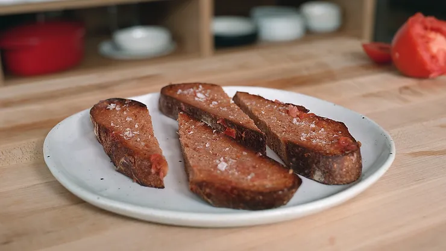

Pan Con Tomate

Original recipe by Joshua Weissman
Ingredients
- 1 slice sourdough bread, sliced 2.5-3.5cm thick
- 1 garlic clove, peeled
- 1 small roma tomato
Method
- In a toaster or your oven, toast your bread until crisp and golden brown.
- Slice the top off the garlic clove and rub the hot toasted bread with the garlic to infuse the bread with garlic flavor.
- Cut off the end of the tomato and rub it on the bread flesh side down, letting the tomato break apart on the bread. It will soak the bread in tomato, leaving behind some of its flesh and all of its flavor. Season with salt. Serve and enjoy.
Home